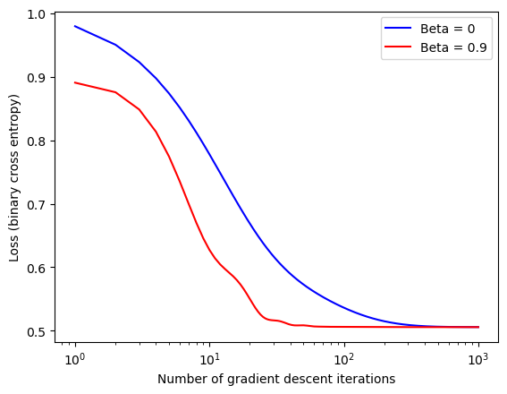

Implementing gradient descent to solve emperical risk minimization for Logistic Regression
Author
Ryan Mauney
Published
April 7, 2024
Data Preparation
%load_ext autoreload%autoreload 2import torchimport matplotlib.pyplot as pltfrom logistic import LogisticRegression, GradientDescentOptimizer# generate random data pointsdef classification_data(n_points =300, noise =0.2, p_dims =2): y = torch.arange(n_points) >=int(n_points/2) y =1.0*y X = y[:, None] + torch.normal(0.0, noise, size = (n_points,p_dims)) X = torch.cat((X, torch.ones((X.shape[0], 1))), 1)return X, yX, y = classification_data(noise =0.5)
The autoreload extension is already loaded. To reload it, use:
%reload_ext autoreload
Gradient Descent Experimentation
First lets performa a vanilla gradient descent with pdims = 2, a small Œ±, and ùõΩ = 0. We would expect the loss to decrease monotonically.
# instantiate a model and an optimizerLR = LogisticRegression() opt = GradientDescentOptimizer(LR)# for keeping track of loss valuesloss_vec = []for _ inrange(1000):# not part of the update: just for tracking our progress loss = LR.loss(X, y) loss_vec.append(loss)# only this line actually changes the parameter value opt.step(X, y, alpha =0.1, Beta =0)plt.plot(torch.arange(1, len(loss_vec)+1), loss_vec, color ="black")plt.semilogx()labs = plt.gca().set(xlabel ="Number of gradient descent iterations", ylabel ="Loss (binary cross entropy)")
The implementation appears correct because the loss function decreases monotonically over iterations, which is expected in properly functioning gradient descent for logistic regression. The smooth decline in binary cross-entropy loss indicates that the model is learning effectively without divergence or oscillations. Additionally, the logarithmic x-axis confirms that the loss reduction is well-behaved over multiple orders of magnitude in iterations. These characteristics suggest that the weight updates are correctly applied and that the optimization process is progressing as intended. Now on the same data, implement gradient descent with a ùõΩ = .9 and compare the difference in plots.
# instantiate a model and an optimizerLR = LogisticRegression() opt = GradientDescentOptimizer(LR)# for keeping track of loss valuesloss_vec = []for _ inrange(1000):# not part of the update: just for tracking our progress loss = LR.loss(X, y) loss_vec.append(loss)# only this line actually changes the parameter value opt.step(X, y, alpha =0.1, Beta =.9)plt.plot(torch.arange(1, len(loss_vec)+1), loss_vec, color ="black")plt.semilogx()labs = plt.gca().set(xlabel ="Number of gradient descent iterations", ylabel ="Loss (binary cross entropy)")
Comparing the gradient descent with momentum (ùõΩ>0) to the previous vanilla gradient descent (ùõΩ=0), we observe that the addition of momentum leads to a smoother and faster convergence. The loss decreases more rapidly in the early iterations, demonstrating how momentum helps accelerate learning by reducing oscillations and maintaining directional consistency. In contrast, the previous descent without momentum had a more gradual decline in loss. This confirms that momentum improves optimization efficiency, reaching a lower loss in fewer iterations while maintaining stability. Now, let‚Äôs explore how the algorithim handles overfitting where pdims > n_points.
# generate random data points with pdims > n pointsdef classification_data2(n_points =150, noise =0.2, p_dims =300): y = torch.arange(n_points) >=int(n_points/2) y =1.0*y X = y[:, None] + torch.normal(0.0, noise, size = (n_points,p_dims)) X = torch.cat((X, torch.ones((X.shape[0], 1))), 1)return X, y# generate a training and test set with pdims > n pointsX_train, y_train = classification_data2(noise =0.5)X_test, y_test = classification_data2(noise =.5)LR = LogisticRegression()opt = GradientDescentOptimizer(LR)# training loop without keep track of lossfor _ inrange(1000):# only this line actually changes the parameter value opt.step(X_train, y_train, alpha =0.1, Beta =.9)# calculate training accuracyy_pred = LR.predict(X_train)acc = (1.0*(y_pred == y_train)).mean().item()print("The model has a training accuracy of: "+str(acc))# calculate the testing accuracyy_pred = LR.predict(X_test)acc = (1.0*(y_pred == y_test)).mean().item()print("The model has a testing accuracy of: "+str(acc))
The model has a training accuracy of: 1.0
The model has a testing accuracy of: 0.9399999976158142
The Wine Quality dataset from the UCI Machine Learning Repository consists of two datasets related to red and white Vinho Verde wines from Portugal. These datasets were originally compiled by researchers Paulo Cortez and colleagues at the University of Minho in collaboration with the Viticulture Commission of the Vinho Verde Region (CVRVV). Each dataset contains physicochemical measurements of wine samples—1,599 red wines and 4,898 white wines—alongside sensory quality scores rated by professional tasters. The goal is to model wine quality based on chemical properties, making the data suitable for both regression and classification tasks. The original study describing the dataset is “Modeling wine preferences by data mining from physicochemical properties” by Cortez et al., published in Decision Support Systems (2009).
from sklearn.preprocessing import StandardScalerfrom ucimlrepo import fetch_ucirepo from sklearn.model_selection import train_test_splitimport numpy as np# fetch dataset wine_quality = fetch_ucirepo(id=186) # data (as pandas dataframes) X = wine_quality.data.features.to_numpy() y = wine_quality.data.targets.to_numpy()# Convert quality scores to binary labels (1 for high, 0 for low)y = (y >5).astype(int) # Vectorized operation# Split into train (60%), val (20%), test (20%)X_train, X_temp, y_train, y_temp = train_test_split(X, y, test_size=0.4)X_val, X_test, y_val, y_test = train_test_split(X_temp, y_temp, test_size=0.5)# Normalize the featuresscaler = StandardScaler()X_train = scaler.fit_transform(X_train)X_test = scaler.fit_transform(X_test)# Convert to torch tensorsX_train = torch.tensor(X_train, dtype = torch.float32)y_train = torch.tensor(y_train, dtype = torch.float32).squeeze()X_test = torch.tensor(X_test, dtype = torch.float32)y_test = torch.tensor(y_test, dtype = torch. float32).squeeze()# add a 1 to the end of each rowX_train = torch.cat((X_train, torch.ones((X_train.shape[0], 1))), 1)X_test = torch.cat((X_test, torch.ones((X_test.shape[0], 1))), 1)# perform a logistic regression on the data# instantiate a model and an optimizerLR1 = LogisticRegression()LR2 = LogisticRegression() opt1 = GradientDescentOptimizer(LR1)opt2 = GradientDescentOptimizer(LR2)# for keeping track of loss valuesloss1_vec = []loss2_vec = []for _ inrange(1000):# Track loss values (convert tensors to scalars) loss1_vec.append(LR1.loss(X_train, y_train)) loss2_vec.append(LR2.loss(X_train, y_train))# Perform optimization step opt1.step(X_train, y_train, alpha =0.1, Beta =0) opt2.step(X_train, y_train, alpha =0.1, Beta =0.9)# Plot loss over iterationsplt.plot(range(1, len(loss1_vec) +1), loss1_vec, color ="blue", label ="Beta = 0")plt.plot(range(1, len(loss2_vec) +1), loss2_vec, color ="red", label ="Beta = 0.9")plt.semilogx()plt.xlabel("Number of gradient descent iterations")plt.ylabel("Loss (binary cross entropy)")plt.legend()plt.show()# Compute the Loss and Accuracy of the Model Against the Test Setprint("The loss of the model with Beta = 0 is: "+str(LR1.loss(X_test, y_test).item()))print("The loss of the model with Beta = .9 is: "+str(LR2.loss(X_test, y_test).item()))# calculate the models accuraciesy_pred1 = LR1.predict(X_test)y_pred2 = LR2.predict(X_test)acc1 = (1.0*(y_pred1 == y_test)).mean()acc2 = (1.0*(y_pred2 == y_test)).mean()print("The accuracy of the model with Beta = 0 is: "+str(acc1.item()))print("The accuracy of the model with Beta = .9 is: "+str(acc2.item()))

The loss of the model with Beta = 0 is: 0.49104881286621094
The loss of the model with Beta = .9 is: 0.49072471261024475
The accuracy of the model with Beta = 0 is: 0.7507692575454712
The accuracy of the model with Beta = .9 is: 0.7523077130317688